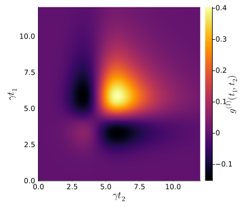
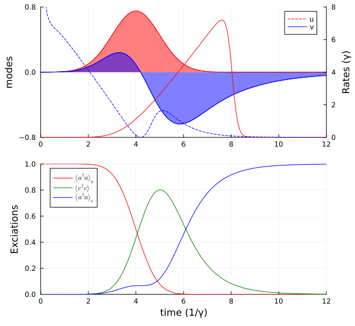

Tutorial
The basic usage is probably best illustrated with a brief example. In the following, we describe the cavity scattering of a single photon. A common procedure is as follows
- build the SLH model
- translate it to numerical operators
- simulate the dynamics
- compute the two-time correlation matrix and extract the dominant output mode
- simulate the dynamics again with the output mode
1. Setup and symbolic model
We start by defining the symbolic Hilbert space, operators, and parameters. The model is a one-sided cavity with an input mode u, a system mode c, and an output mode v.
using QuantumInputOutputusing SecondQuantizedAlgebrausing QuantumOpticsusing QuantumOpticsBase: daggerusing LinearAlgebrausing Plotsusing LaTeXStringshu1 = FockSpace(:u1)hc1 = FockSpace(:c1)hv1 = FockSpace(:v1)h = hu1 ⊗ hc1 ⊗ hv1au = Destroy(h, :a_u, 1)c = Destroy(h, :c, 2)av = Destroy(h, :a_v, 3)@variables g_u::Complex Δ::Real γ::Real g_v::ComplexThe SLH triples for the input mode, system cavity, and output mode are then cascaded to obtain the effective Hamiltonian and Lindblad operator.
G_u = SLH(1, g_u * au, 0)G_c = SLH(1, √(γ) * c, Δ * c' * c)G_v = SLH(1, g_v * av, 0)G_cas = ▷(G_u, G_c, G_v)H = hamiltonian(G_cas)\[0.5 ~ \mathrm{imag}\left( \mathtt{g_{u}} \right) ~ \sqrt{\gamma} - 0.5 ~ \mathrm{real}\left( \mathtt{g_{u}} \right) ~ \sqrt{\gamma} ~ \mathit{i} a_{\mathrm{u}}c^{\dagger} + 0.5 ~ \mathrm{imag}\left( \mathtt{g_{u}} \right) ~ \mathrm{real}\left( \mathtt{g_{v}} \right) - 0.5 ~ \mathrm{imag}\left( \mathtt{g_{v}} \right) ~ \mathrm{real}\left( \mathtt{g_{u}} \right) + \left( - 0.5 ~ \mathrm{imag}\left( \mathtt{g_{v}} \right) ~ \mathrm{imag}\left( \mathtt{g_{u}} \right) - 0.5 ~ \mathrm{real}\left( \mathtt{g_{v}} \right) ~ \mathrm{real}\left( \mathtt{g_{u}} \right) \right) ~ \mathit{i} a_{\mathrm{u}}a_{\mathrm{v}}^{\dagger} + 0.5 ~ \mathrm{imag}\left( \mathtt{g_{u}} \right) ~ \sqrt{\gamma} + 0.5 ~ \mathrm{real}\left( \mathtt{g_{u}} \right) ~ \sqrt{\gamma} ~ \mathit{i} a_{\mathrm{u}}^{\dagger}c + 0.5 ~ \mathrm{imag}\left( \mathtt{g_{u}} \right) ~ \mathrm{real}\left( \mathtt{g_{v}} \right) - 0.5 ~ \mathrm{imag}\left( \mathtt{g_{v}} \right) ~ \mathrm{real}\left( \mathtt{g_{u}} \right) + \left( 0.5 ~ \mathrm{imag}\left( \mathtt{g_{v}} \right) ~ \mathrm{imag}\left( \mathtt{g_{u}} \right) + 0.5 ~ \mathrm{real}\left( \mathtt{g_{v}} \right) ~ \mathrm{real}\left( \mathtt{g_{u}} \right) \right) ~ \mathit{i} a_{\mathrm{u}}^{\dagger}a_{\mathrm{v}} - 0.5 ~ \mathrm{imag}\left( \mathtt{g_{v}} \right) ~ \sqrt{\gamma} - 0.5 ~ \mathrm{real}\left( \mathtt{g_{v}} \right) ~ \sqrt{\gamma} ~ \mathit{i} ca_{\mathrm{v}}^{\dagger} + \Delta c^{\dagger}c - 0.5 ~ \mathrm{imag}\left( \mathtt{g_{v}} \right) ~ \sqrt{\gamma} + 0.5 ~ \mathrm{real}\left( \mathtt{g_{v}} \right) ~ \sqrt{\gamma} ~ \mathit{i} c^{\dagger}a_{\mathrm{v}}\]
L = jump_operator(G_cas)[1]\[\mathrm{real}\left( \mathtt{g_{u}} \right) + \mathrm{imag}\left( \mathtt{g_{u}} \right) ~ \mathit{i} a_{\mathrm{u}} + \sqrt{\gamma} c + \mathrm{real}\left( \mathtt{g_{v}} \right) + \mathrm{imag}\left( \mathtt{g_{v}} \right) ~ \mathit{i} a_{\mathrm{v}}\]
2. Numerical parameters and input pulse
We choose numerical parameters and define a Gaussian input pulse u(t) and calculate the corresponding coupling function g_u(t).
γ_ = 1.0Δ_ = 0.0p_sym = [γ, Δ, g_v]p_num = [γ_, Δ_, 0.0] # g_v = 0dict_p = Dict(p_sym .=> p_num)# Gaussian input modeσ = 1/γ_T_end = 12σu1(t) = 1/(sqrt(σ)*π^(1/4)) * exp( -(t - 4σ)^2 / (2*σ^2) )T = [0:0.002:1;]*T_endΔT = T[2] - T[1]gu_t = coupling_input(u1, T)dict_p_t = Dict(g_u => gu_t)We define the numerical basis and translate the symbolic operators into QuantumOptics.jl objects. If time_parameter are provided, the result becomes a function of time. Since the purpose of the package is to describe pulses, this is the usual case.
bu1 = FockBasis(2)bc1 = FockBasis(2)bv1 = FockBasis(2)b = bu1 ⊗ bc1 ⊗ bv1H_QO = to_numeric(H, b; parameter=dict_p, time_parameter=dict_p_t)L_QO = to_numeric(L, b; parameter=dict_p, time_parameter=dict_p_t)3. Time evolution
We now solve the master equation. The required callback for timeevolution.master_dynamic returns H(t), J(t) and J⁺(t) at each time.
function input_output_1(t, ρ) Ht = H_QO(t) J = [L_QO(t)] return Ht, J, dagger.(J)endψ0 = fockstate(bu1, 1) ⊗ fockstate(bc1, 0) ⊗ fockstate(bv1, 0)t_, ρt = timeevolution.master_dynamic(T, ψ0, input_output_1)4. Two-time correlation function
To extract the dominant output mode, we compute the two-time correlation matrix $g^{(1)}(t_1,t_2) = \langle L_s^\dagger(t_1) L_s(t_2) \rangle$ and diagonalize it. To this end, we first define the desired numerical operators.
au_qo = to_numeric(au, b)c_qo = to_numeric(c, b)av_qo = to_numeric(av, b)Ls(t) = gu_t(t) * au_qo + √(γ_) * c_qog1_m = correlation_matrix(T, ρt, input_output_1, Ls)p = heatmap( T, T, real.(g1_m); c = :inferno, xlabel = L"\gamma t_2", ylabel = L"\gamma t_1", colorbar_title = L"g^{(1)}(t_1,t_2)", size = (400, 350),)p
The dominant temporal output mode corresponds to the eigenvector with the largest eigenvalue. With the average photon number in each mode, we can see that the photon is scattered into a single temporal mode.
F = eigen(g1_m)ΔT = T[2] - T[1]n_avg = round.(real.(F.values)*ΔT; digits=3)modes = F.vectorsv_mode = modes[:, end] / sqrt(ΔT)@show n_avg[end-1:end]n_avg[end - 1:end] = [0.0, 0.998]5. Output mode and full dynamics
Finally, we treat the dominant output mode explicitly by providing g_v(t) as a time-dependent parameter, and propagate the system again.
gv_t = coupling_output(v_mode, T)dict_p_t_2 = Dict([g_u, g_v] .=> [gu_t, gv_t])dict_p_2 = Dict([γ, Δ] .=> [γ_, Δ_])H_QO_2 = to_numeric(H, b; parameter=dict_p_2, time_parameter=dict_p_t_2)L_QO_2 = to_numeric(L, b; parameter=dict_p_2, time_parameter=dict_p_t_2)function input_output_2(t, ρ) Ht = H_QO_2(t) J = [L_QO_2(t)] return Ht, J, dagger.(J)endt_2, ρt_2 = timeevolution.master_dynamic(T, ψ0, input_output_2)n_u_t = real.(expect(au_qo' * au_qo, ρt))n_c_t = real.(expect(c_qo' * c_qo, ρt))n_v_t = real.(expect(av_qo' * av_qo, ρt_2))Due to the linearity of the system the photon is fully scattered into a single mode.
p1 = plot(T, u1.(T); ls = :dash, label = "u", color = :red)plot!(p1, T, u1.(T); fillrange = 0, fillalpha = 0.5, color = :red, label = "")plot!(p1, T, real.(v_mode); color = :blue, label = "v")plot!(p1, T, real.(v_mode); fillrange = 0, fillalpha = 0.5, color = :blue, label = "")plot!( p1; xlims = (0, 12), ylims = (-0.8, 0.8), yticks = [-0.8, 0, 0.8], ylabel = "modes", legend = :best,)p1r = twinx(p1)plot!(p1r, T, abs2.(gu_t.(T)); color = :red, label = "")plot!(p1r, T[3:end], abs2.(gv_t.(T))[3:end]; color = :blue, ls = :dash, label = "")plot!(p1r; xlims = (0, 12), ylims = (0, 8), ylabel = "Rates (γ)")p2 = plot(T, n_u_t; label = L"\langle a^\dagger a \rangle_u", color = :red)plot!(p2, T, n_c_t; label = L"\langle c^\dagger c \rangle", color = :green)plot!(p2, T, n_v_t; label = L"\langle a^\dagger a \rangle_v", color = :blue)plot!( p2; xlims = (0, 12), ylims = (0, 1), xlabel = "time (1/γ)", ylabel = "Exciations", legend = :best,)plot(p1, p2; layout = (2, 1), size = (600, 550))